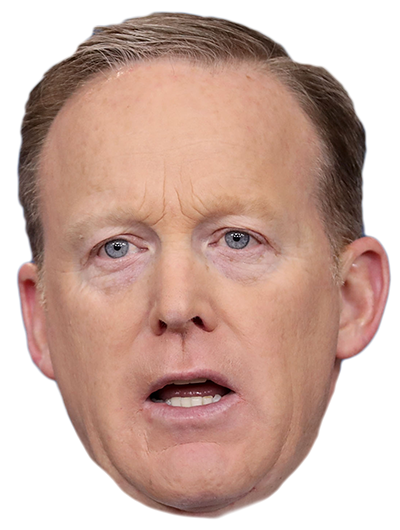
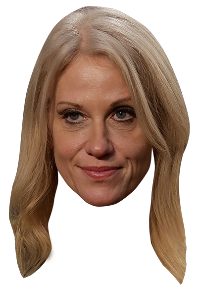
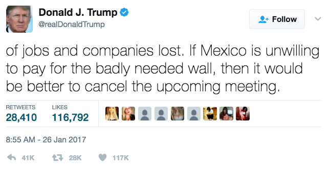
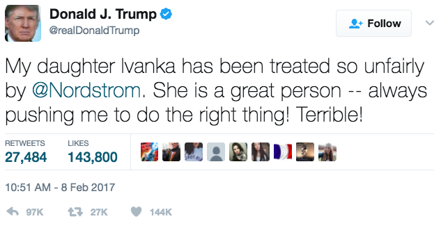
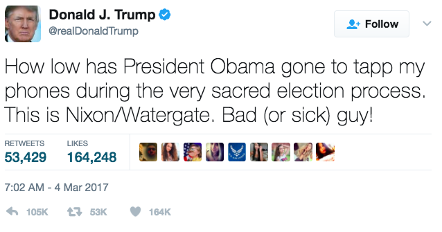
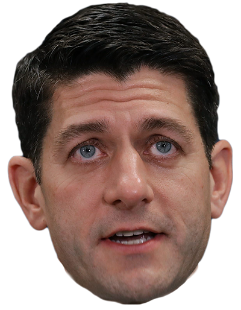
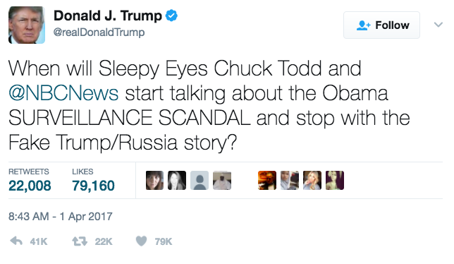
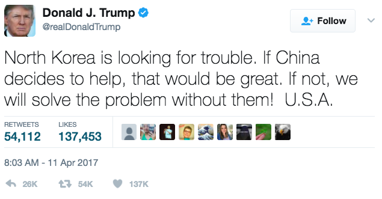
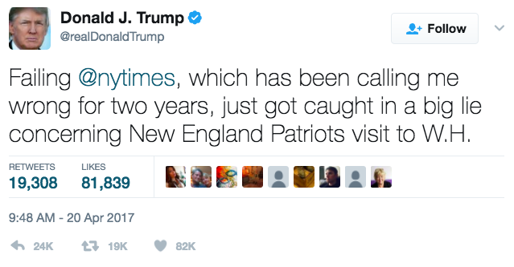

Day 1 Jan. 20
With a sometimes scowling Melania Trump seated behind him, newly minted President Trump proclaims, “This American carnage stops right here and stops right now.” He signs an executive order aimed at rolling back Obamacare.
Day 2 Jan. 21
 Press secretary Sean Spicer claims Trump had drawn the “largest audience to ever witness an inauguration, period, both in person and around the globe.” Visiting the CIA, the President says, “Trust me, I’m like a smart person.”
Day 3 Jan. 22
White House aide Kellyanne Conway says Spicer offers “alternative facts.”
Day 4 Jan. 23
Millions of people cast ballots illegally, Trump falsely declares to explain how Hillary Clinton got 3 million more votes than he did. He OKs the Dakota Access Pipeline and the Keystone XL Pipeline.
Day 6 Jan. 25
Signs orders to kick-start Mexican border wall construction and withhold federal funding from sanctuary cities.
Day 7 Jan. 26
Twitter blast prompts Mexican President Enrique Pena Nieto to cancel Washington trip.
Day 8 Jan. 27
International chaos after Trump signs order temporarily banning all refugees, as well as travelers from seven Muslim-majority nations.
Day 9 Jan. 28
President installs right-wing Stephen Bannon on National Security Council while cutting sway of military and intelligence chiefs. Judges block travel ban. Trump authorizes Yemen raid that costs lives of several civilians and a Navy SEAL.
Day 11 Jan. 30
Obama Justice Department holdover Sally Yates refuses to defend travel ban in court. Out she goes. Trump instructs agencies to cut two old regulations for every new one.
Day 12 Jan. 31
Trump nominates Neil Gorsuch to Supreme Court.
Day 13 Feb. 1
 Describes 19th century African-American abolitionist Frederick Douglass as someone “who’s done an amazing job that is being recognized more and more.”
Describes 19th century African-American abolitionist Frederick Douglass as someone “who’s done an amazing job that is being recognized more and more.”
Day 14 Feb. 2
At National Prayer Breakfast, Trump asks the crowd to pray for Arnold Schwarzenegger’s ratings on “The Apprentice.”
Day 15 Feb. 3
Judge blocks entire travel ban. Trump heads to Mar-a-Lago for first time as President.
Day 16 Feb. 4
Trump calls travel ban judge a “so-called judge.”
Day 17 Feb. 5
Super Bowl fun at Mar-a-Lago.
Day 19 Feb. 7
Betsy DeVos confirmed as education secretary.
Day 20 Feb. 8
Trump blasts retailer Nordstrom for dropping daughter Ivanka’s fashion line. Jeff Sessions confirmed as attorney general.
Day 22 Feb. 10
A second consecutive weekend at Mar-a-Lago.
Day 23 Feb. 11
North Korean ballistic missile test disrupts Mar-a-Lago dinner with Japanese Prime Minister Shinzo Abe. The two leaders scramble to respond in public dining room.
Day 25 Feb. 13
National security adviser Michael Flynn resigns after misleading Vice President Pence about Russian contact. Steven Mnuchin is confirmed as treasury secretary.
Day 26 Feb. 14
House and Senate probes into pro-Trump Russian meddling into the 2016 election draw attention. Trump tweets that “illegal leaks coming out of Washington” are “the real story.”
Day 27 Feb. 15
During press conference with Israeli Prime Minister Benjamin Netanyahu, Trump says he is not committed to a two-state solution in the Middle East. Abuse accusations by ex-wife sink labor secretary nominee Andy Puzder. President’s approval rating falls to 40%.
Day 28 Feb. 16
First solo presidential press conference — Trump praises ousted Flynn as “a fine man,” criticizes Jewish reporter for asking about a wave of anti-Semitic threats, blasts “dishonest” media for “fake news” (that he acknowledges is based on facts) and calls administration a “fine-tuned machine.”
Day 29 Feb. 17
Back to Mar-a-Lago for third consecutive weekend.
Day 30 Feb. 18
During a campaign-style rally, Trump falsely suggests Sweden had been hit by a terror attack.
Day 32 Feb. 20
Army Lt. Gen. H.R. McMaster is new national security adviser.
Day 33 Feb. 21
Deportations of undocumented immigrants is put on fast track.
Day 34 Feb. 22
Day 36 Feb. 24
Demands the “fake media” stop quoting anonymous sources — hours after White House officials held a briefing where they insisted on anonymity. Calls “fake news the enemy of the people.”
Day 37 Feb. 25
No Mar-a-Lago this weekend. Instead, dinner at Trump hotel in Washington.
Day 40 Feb. 28
Good reviews for Trump’s first address before a joint session of Congress. Signs bill making it easier for mentally ill people to obtain guns.
Day 42 March 2
AG Sessions recuses himself from investigations of ties between Trump campaign and Russia because he had met with Russian ambassador in 2016.
Day 43 March 3
Trump demands investigations of Sen. Chuck Schumer and Rep. Nancy Pelosi for supposed ties to Vladimir Putin or Russia. Fourth Mar-a-Lago sojourn.
Day 44 March 4
Tweets baseless accusation that former President Barack Obama had illegally wiretapped Trump Tower.
Day 45 March 5
Calls on the House and Senate committees investigating Russian meddling in the 2016 election to also probe his false claim that Obama had ordered wiretaps of Trump Tower.
Day 46 March 6
Second travel ban, this time from six Muslim-majority nations. House Republicans release proposal to repeal and replace Obamacare.
Day 50 March 10
 Trump demands resignations of top federal prosecutors nationwide, including Manhattan U.S. Attorney Preet Bharara. Previously, Trump had personally asked Bharara to stay on the job.
Trump demands resignations of top federal prosecutors nationwide, including Manhattan U.S. Attorney Preet Bharara. Previously, Trump had personally asked Bharara to stay on the job.
Day 51 March 11
Trump fires Bharara after Bharara failed to quit. Golf at Trump National Golf Club outside Washington.
Day 53 March 13
Congressional Budget Office says Republicans’ health care plan would deprive 24 million people of health insurance.
Day 54 March 14
Leaked return shows Trump paid $38 million in federal taxes in 2005 on $153 million in income.
Day 55 March 15
Federal judge blocks Trump's second travel ban as targeted at Muslims.
Day 56 March 16
Budget proposal would gut foreign aid and domestic programs, boost defense and border spending and decimate NYPD terror funding.
Day 57 March 17
Trump is oblivious to shaking German Chancellor Angela Merkel’s hand at White House. Fifth visit to Mar-a-Lago.
Day 60 March 20
Director James Comey acknowledges FBI is investigating Trump campaign ties to Russia and knocks down Trump tweets that Obama wiretapped Trump Tower.
Day 61 March 21
Demands that House Republicans vote on bill to repeal and replace Obamacare.
Day 62 March 22
Approval rating at 39 percent.
Day 63 March 23
 Lacking votes, House Republicans pull President's proposal to repeal and replace Obamacare.
Day 65 March 25
Dinner at Trump International Hotel in Washington, D.C.
Day 66 March 26
A round at Trump National Golf Club in Virginia.
Day 67 March 27
House Intelligence Committee Chairman Devin Nunes admits to secretly visiting White House grounds amid Russian meddling probe.
Day 68 March 28
Trump rolls back anti-global-warming environmental policies.
Day 69 March 29
Ivanka Trump formally joins administration as “special assistant to the President.” Approval ratings fall to 35%.
Day 72 April 1
Trump takes to Twitter to repeat baseless claim that the Obama administration had illegally surveilled his campaign.
Day 73 April 2
Hits links at Trump National Golf Club.
Day 74 April 3
Welcomes Egyptian President Abdel Fattah al-Sissi to White House.
Day 75 April 4
Trump condemns chemical gas attack in Syria and blames Obama for being too soft on strongman Bashar Assad.
Day 76 April 5
Syrian gas attack “crossed a lot of lines for me...many, many lines, beyond a red line,” Trump declares. Separately, he removes Stephen Bannon from National Security Council.
Day 77 April 6
On sixth visit as President to Mar-a-Lago, Trump meets with Chinese President Xi Jinping. Authorizes U.S. missile strike on Syrian air base from which Assad regime mounted chemical attack. Trump tells Xi of the strikes over dessert.
Day 78 April 7
Senate confirms Neil Gorsuch for the Supreme Court after GOP revokes longstanding rule requiring a supermajority for justices.
Day 82 April 11
Trump tweets that he would be willing to take on North Korea nuclear weapons program without international help.
Day 83 April 12
Reversing campaign positions, Trump declines to label China a “currency manipulator,” says NATO is “no longer obsolete,” and declares that the Export-Import Bank is “a very good thing.”
Day 84 April 13
Military drops “Mother of All Bombs” on ISIS tunnels in eastern Afghanistan. Trump signs legislation allowing states to deny federal family planning money to Planned Parenthood and other abortion providers. Seventh weekend visit to Mar-a-Lago.
Day 85 April 14
From here on out, White House visitor logs will be secret.
Day 87 April 16
Easter services at Bethesda by the Sea, an Episcopal church close to Mar-a-Lago.
Day 88 April 17
Trump hosts a downsized annual Easter Egg Roll. Melania Trump appears to remind the President to put his hand over his heart during the national anthem.
Day 89 April 18
Signs an executive order aimed at making the government buy more American-made products and tightening rules on an employment visa program.
Day 90 April 19
Super Bowl champions New England Patriots visit White House — minus star QB Tom Brady.
Day 91 April 20
Day 93 April 22
Dinner at Trump International Hotel.
Day 95 April 24
Sanctions against 271 scientists involved in Syria’s chemical weapons program. Congratulatory phone call to astronaut Peggy Whitson for surpassing a record 534 days in space.
Day 96 April 25
On Holocaust Remembrance Day, Trump condemns anti-Semitism and pledges to “always stand with the Jewish people.” Judge freezes executive order threatening to cut federal funding for so-called sanctuary cities like New York.
Day 97 April 26
White House officials release Trump’s tax reform plan, which would include tax breaks for the wealthy, but don’t say how they would pay for it.
Day 98 April 27
“I thought it would be easier,” Trump tells Reuters, saying he “loved” his previous life.
Day 99 April 28
Speaks to National Rifle Association's annual convention, tells the gun group it did more than any other organization to get him elected.
Day 100 April 29
Holds campaign-style rally in Harrisburg, Pa., where he attacks the media and Obama. Crowd chants “lock her up,” about Hillary Clinton, despite fact that Democratic nominee lost the race nearly six months earlier.